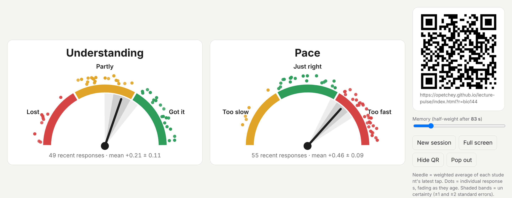
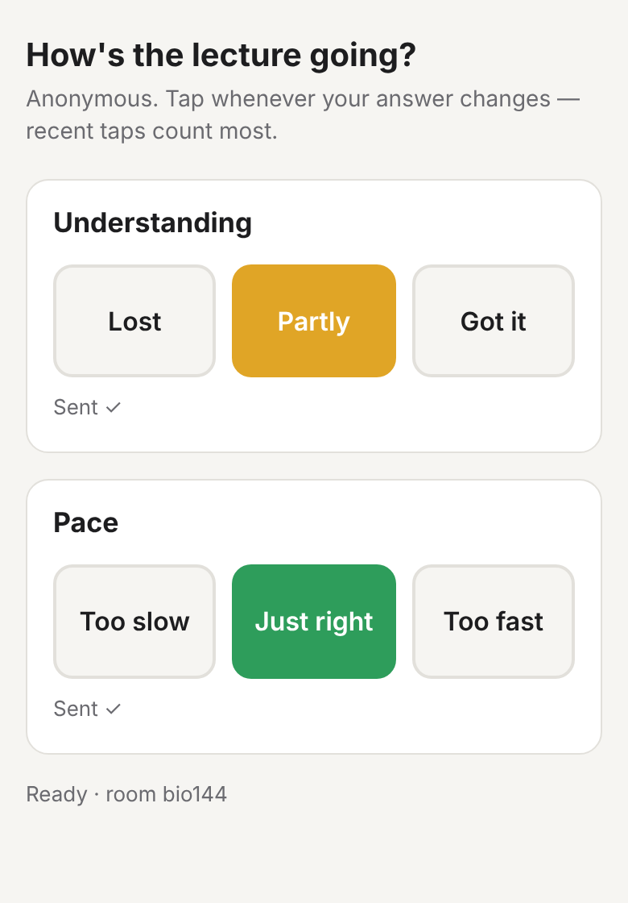
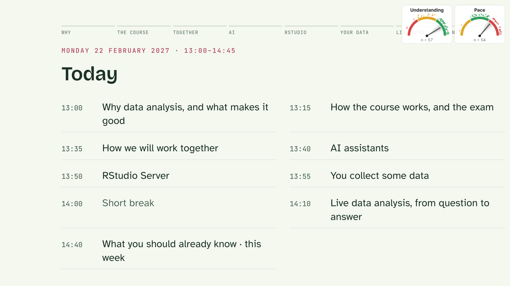

Students tap their phone. Your screen shows how well the room is following and whether your pace is right, live and anonymously.

Many students won't put up a hand to say "I'm lost" or "this is too fast". With Lecture Pulse they can say so with one tap, at any moment, without anyone knowing who tapped.
Understanding: Lost / Partly / Got it.
Pace: Too slow / Just right / Too fast.
Old taps fade away, so the dials follow the room as it changes during the lecture.
A narrow band means many students agree. A wide band means opinions are split, or only a few people are tapping.
See the spread of answers, not just the average. Dots fade as they age.
A small window floats over PowerPoint or Keynote, or the dials can sit in a corner of HTML slides.
Each lecturer uses their own "room", so lectures never mix.


You're welcome to use this copy, for free, as often as you like.
It keeps your students' taps separate from other lectures. Make it unique and a bit hard to guess, e.g. miller-ecology-2027.
Letters, numbers and dashes only; anything else is removed.
Open your dials link in a web browser on the lecture computer. Chrome or Edge is best. Bookmark it for next time.
Put the dials page on the projector for a minute. Students scan the QR code with their phone camera and tap. Then click Hide QR, or Pop out for a small window that floats over your slides.
The best way is the Pop out button. It opens a small window with the two dials that stays on top of your slideshow, whatever program you present with. You don't need to change your slides at all.
Keynote on a Mac: if the small window disappears when the slideshow starts, open Keynote's Settings → Slideshow and tick the option that lets other apps (Mission Control and others) use the screen. Then the dials can stay visible on top.
Why not put the dials inside the slides? A PDF and Keynote can't show anything live. PowerPoint can, through a "Web Viewer" add-in, but it has to be added slide by slide, needs a recent Microsoft 365 version, and add-ins are often blocked on university computers. The pop-out is simpler and more reliable.
Projector setups vary, so try it once in the lecture room before your first lecture.
Tip: try it once with your own phone before the first lecture, and tell students: "This is anonymous. Tap whenever you feel lost or I'm going too fast; recent taps count most."
Want your copy to be completely independent, e.g. for many large lectures or a whole department? Make your own. It takes about 30–45 minutes, with no programming: you create two free accounts and copy-and-paste a few things. Take it slowly; every step is a click or a paste.
github.com/YOUR-NAME/lecture-pulse.Firebase is a free Google service that passes the taps from phones to your dials.
lecture-pulse. You can switch off Google Analytics. Click through to the end.database.rules.json in your GitHub copy, copy all of it and paste it into the box. Click Publish.</> (Web) icon. Type any nickname, leave "Firebase Hosting" unticked, and click Register app. Copy the part of the code from the { after const firebaseConfig = to the matching }.config.js, then the pencil icon (Edit).export const firebaseConfig = {. Replace everything from that { to its matching }; with what you copied, and keep export const firebaseConfig = at the start.databaseURL:. If it's missing, copy the address at the top of the Data tab in Realtime Database (it ends in firebasedatabase.app) and add it as a line like this:databaseURL: "https://your-project-default-rtdb.europe-west1.firebasedatabase.app",GitHub may warn about a "Google API Key" in config.js. That's expected: this key is designed to be public, and your data is protected by the rules you pasted. You can close the alert as "False positive".
https://YOUR-NAME.github.io/lecture-pulse/. That address now shows this page, and the room-name helper above gives links to your copy.| Message on the page | What to do |
|---|---|
admin-restricted-operation | Anonymous sign-in isn't on (step B5) |
PERMISSION_DENIED, or taps never arrive | The rules weren't published (step B4) |
| "Can't determine Firebase Database URL" | The databaseURL line is missing (step C3) |
| Yellow "Local test mode" badge | Your settings aren't in config.js yet (section C) |
| Changes don't show up | Wait up to 10 minutes, then reload |
Each phone counts only through its latest tap per question, scored −1, 0 or +1. A tap made t seconds ago gets weight w = exp(−t/τ). The memory slider on the dials page sets τ; by default a tap has half its weight after about 80 seconds.
| Needle | Weighted mean m = Σwx / (Σw + 0.5). The small 0.5 pulls gently towards the middle, so the needle drifts back to centre when nobody has tapped for a while. |
| Shaded bands | ±1 and ±2 standard errors, s/√nₑ. Here s is the weighted standard deviation and nₑ = (Σw)²/Σw² is the effective number of recent responses. |
| Dots | One per phone, placed in its answer's zone. A dot's transparency is its weight w, so it fades as the tap ages. |
| Fair play | A phone can tap at most once every few seconds, and only its latest answer counts, so one person can't swing the room. |
Yes. Each phone gets a random ID that isn't linked to a name, email address or account. Only the answers (−1/0/+1) and their times are stored, by Google Firebase in the EU (Belgium). Nothing else is collected.
No. It runs on Firebase's free plan, with no payment card. Phones connect only for the moment they send a tap, so hundreds of students can use it at once.
Yes. Each room is completely separate. Just choose a room name that nobody else is likely to pick.
Yes. On the dials page, click Pop out (in Chrome or Edge). This opens a small window that stays on top of PowerPoint, Keynote, a PDF or anything else. See Using it with PowerPoint, Keynote or a PDF for step-by-step instructions.
Not really, and you don't need them to: the pop-out window does the job better. A PDF and Keynote can't show live content. PowerPoint can, with a "Web Viewer" add-in, but only slide by slide, and add-ins are often blocked on university computers. How to use the pop-out.
Yes. Add this line just before </body> in the version of the deck you present from, with your own room name:
<script src="https://opetchey.github.io/lecture-pulse/pulse-widget.js" data-room="your-room-name"></script>Press G during the lecture to hide or show them.
It starts an empty room with a new name and a new QR code. You rarely need it, because old taps fade away by themselves.
Yes, in your own copy: edit the GAUGES part of config.js on GitHub (pencil icon) and commit.
Yes. Open the demo for a simulated class of 80. Or open your dials and tap from your own phone.
If you use Lecture Pulse, I'd love to hear from you, even just one line saying which course you used it in. Ideas and complaints are welcome too.
If so many people use it that it strains the free plan, that's a problem I'd be delighted to have. So please don't hold back.
Owen Petchey, University of Zurich